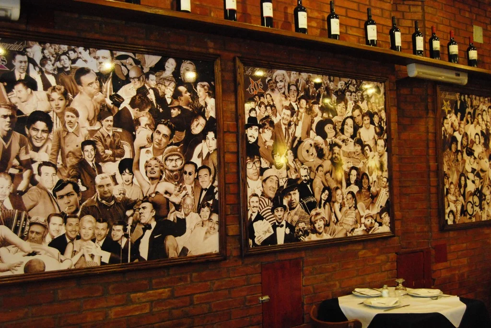
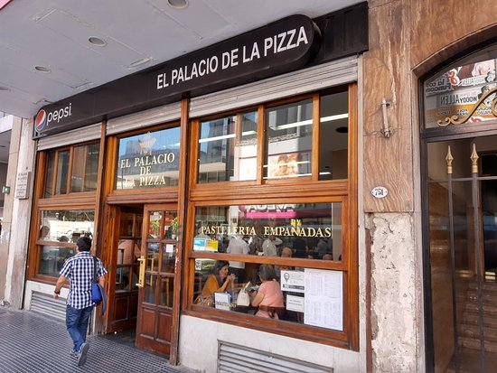

Opciones más solicitadas de Restaurantes
Los inmortales
El restaurante "Los Inmortales" es una cadena de restaurantes argentinos cuyos orígenes proceden de Italia, más precisamente de Castronovo, una ciudad cercana a Nápoles (donde fue creada por primera vez la pizza). Fundado en 1955, ofrece principalmente una diversa variedad de pizzas, además de su cafetería, entre otros platillos.
Cuenta con varias sucursales en Buenos Aires y otras ciudades de Argentina. Sus horarios varían entre las 12:00 horas y la 01:00 horas de domingo a lunes, y hasta las 02:00 horas los viernes y sábados.
El Palacio de la Pizza

El restaurante "El Palacio de la Pizza" es una pizzería tradicional ubicada en Buenos Aires, Argentina. Fundado en 1934, es uno de los restaurantes más antiguos y emblemáticos de la ciudad y se ha convertido en una verdadera institución entre los amantes de la pizza.
La pizzería ofrece una gran variedad de pizzas, desde las tradicionales hasta las más creativas y exóticas, así como también opciones vegetarianas y sin gluten. También se pueden encontrar otros platos típicos de la cocina italiana, como pastas y ensaladas.
Los horarios de atención al público son de lunes a jueves de 12:00 a 01:00 horas, y los viernes y sábados hasta las 02:00 horas. También ofrecen servicio de entrega a domicilio.
Il Fratello Ristorante
El restaurante "Il Fratello Ristorante" es un restaurante italiano ubicado en Buenos Aires, Argentina. Ofrece una amplia variedad de platos italianos tradicionales, como pastas, risottos, pizzas y carnes, así como también una variedad de opciones vegetarianas y sin gluten.
El restaurante está ubicado en la ciudad de Buenos Aires, específicamente en la zona de Palermo. Cuenta con horarios de atención al público desde las 12:00 hasta las 15:00 horas para el almuerzo y desde las 20:00 hasta las 00:00 horas para la cena, todos los días de la semana excepto los lunes que permanece cerrado.